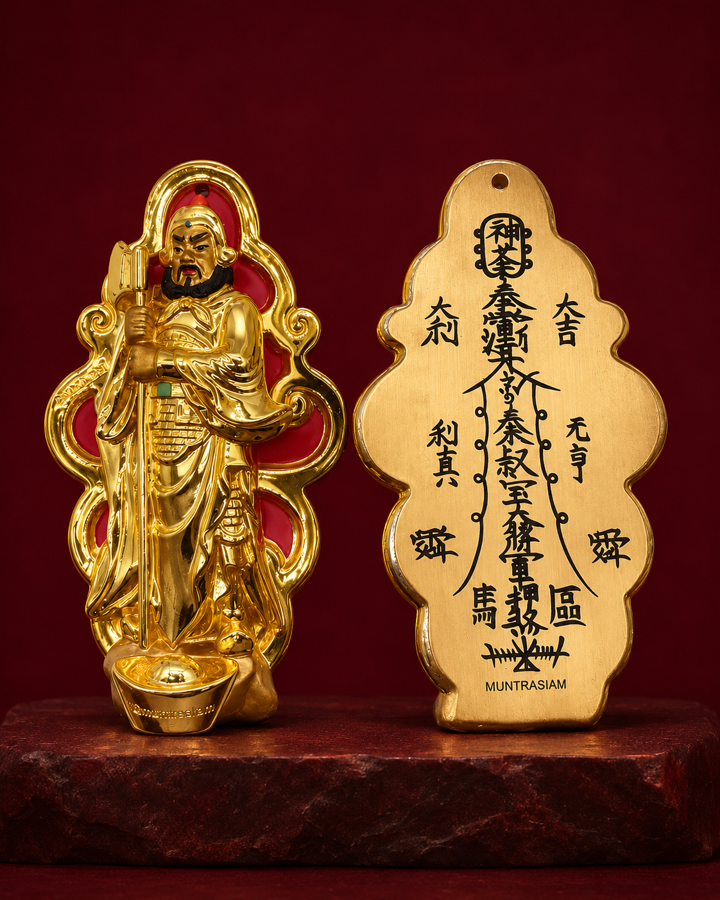

門神 · DOOR GUARDIANS
門神
一對門戶守護神
中國傳統中守護家宅與吉祥的象徵。
門神是門戶的守護神，通常成對安置於主要入口，是家宅或供奉空間中另一組具有獨立寓意的神祇。

THE MEANING
一對門神的寓意
在傳統信仰中，門神守護門戶、寓意驅除不祥，並象徵居住者的安寧與穩固。
可將正面的神像與背面的符文一同欣賞，下方圖集呈現了兩面的細節。
PLACEMENT
安置指引
主要入口處
根據空間條件，安置於住宅或建築的正門。
左右成對安置
保持兩尊完整可見，並與門口的位置相協調。
確認所選門神的樣式
每尊的位置與朝向，應依據該對門神的樣式及 Muntra Siam 的指引。
FORM & INSCRIPTIONS
神像與各尊符文


內容依據所提供的門神資料與品牌方信息整理。供奉方式可隨神像樣式及主持儀式者的指引而有所不同。